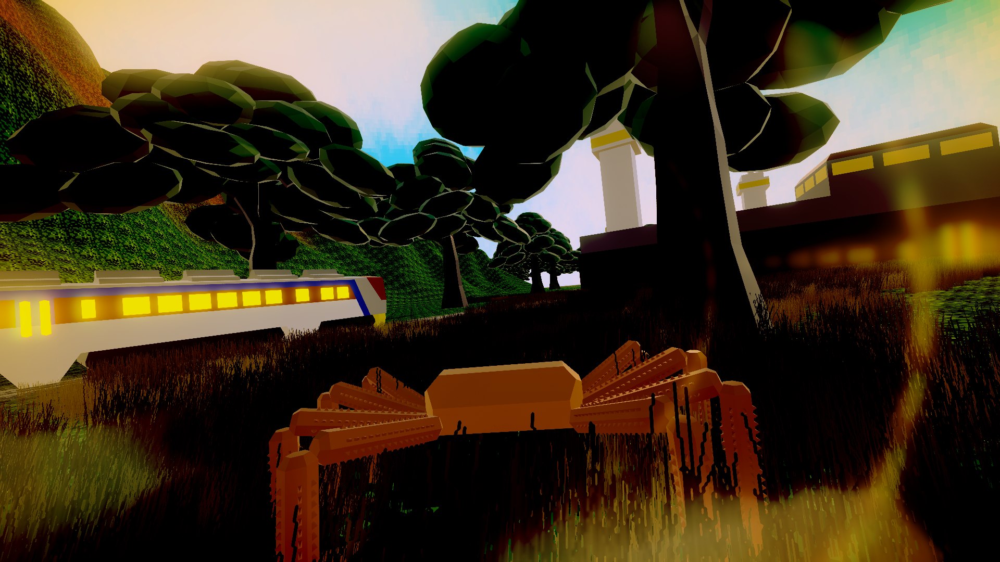
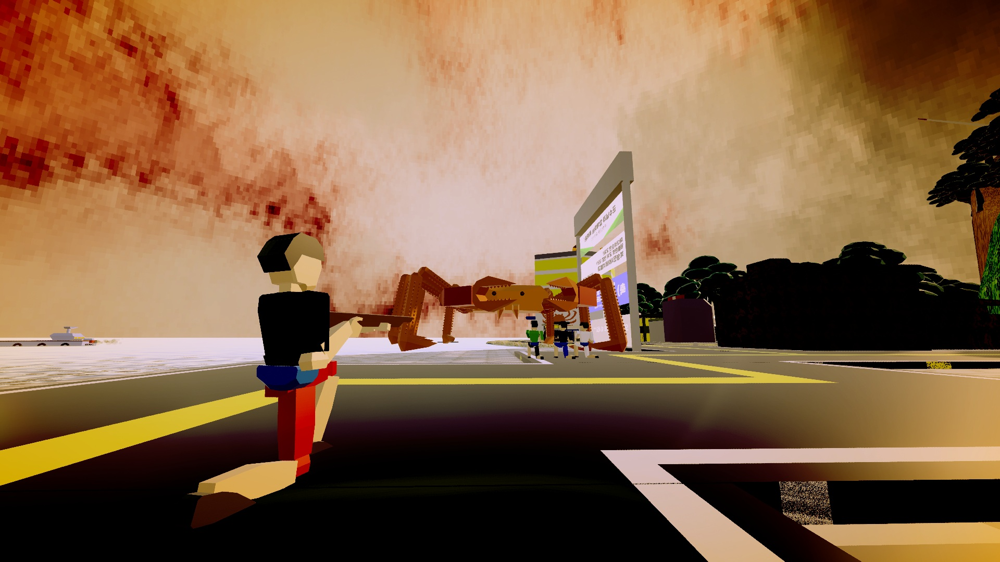
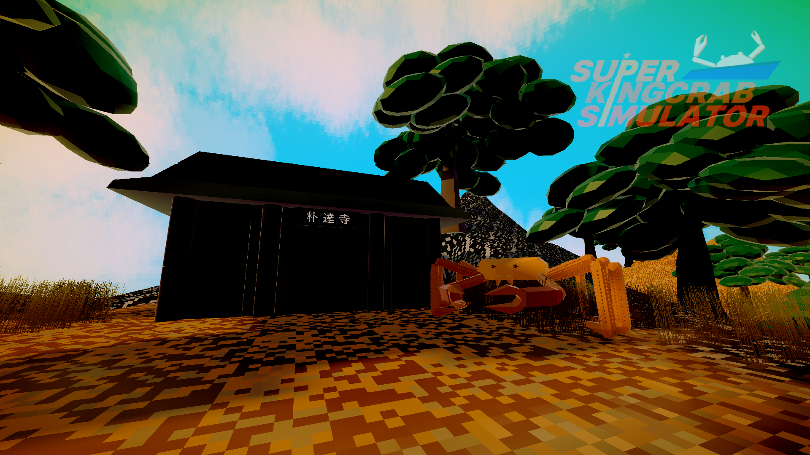
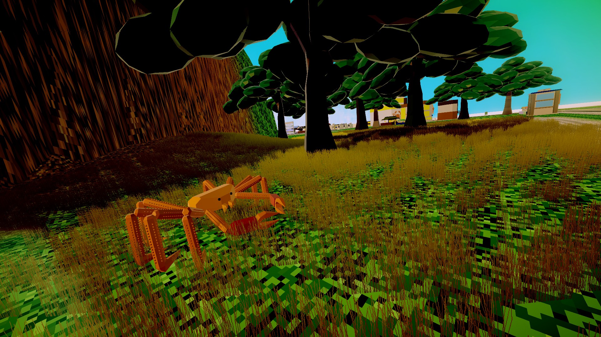

한국어
슈퍼 대게 시뮬레이터는 강력한 "슈퍼 대게"가 건물을 파괴하여, 대게를 해방시키고,
모든 건물을 파괴시키면서 성장해나가는 (준)오픈월드 파괴 액션 게임입니다.
2025년 4분기 ~ 2026년 1분기 사이에 출시예정, 현재 개발중입니다.
English
Super Kingcrab Simulator is a (semi) open-world destruction action game
where a powerful "Super Kingcrab" destroys buildings to liberate crabs,
growing stronger while demolishing everything in its path.
Scheduled to be released between Q4 2025 and Q1 2026, it is currently under development.
Screenshots
   개발과정에서 촬영된 스크린샷으로, 실제 게임 결과는 다를 수 있습니다.
Screenshots taken during the development process, and the actual game results may be different.
플랫폼 Platform
Windows (PC, Steam, 스팀)
? Windows (PC, Stove Indie (스토브 인디))
개발일지 SNS & Devlog SNS
SkagoGames. made in Skago.